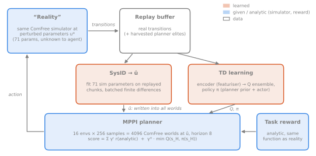
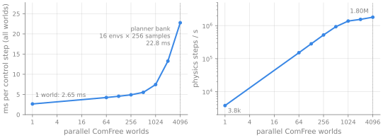
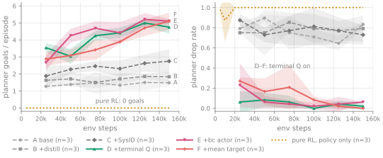
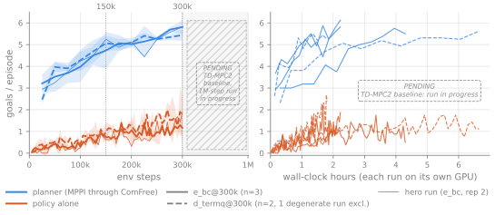
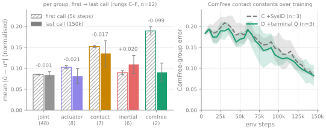
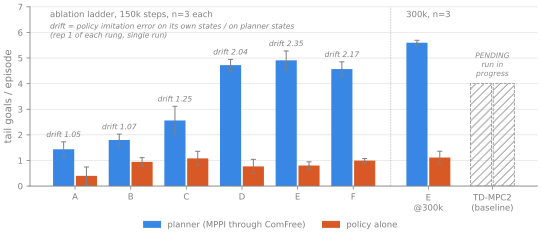
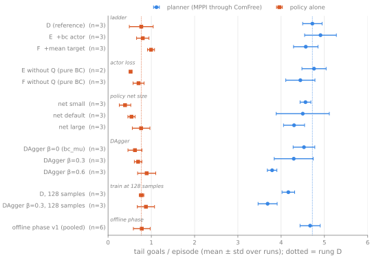
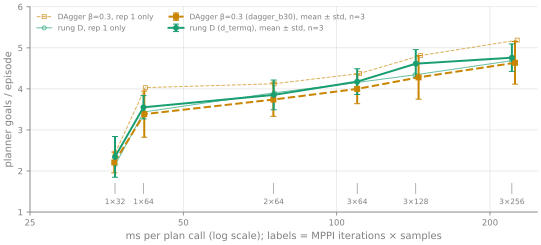

Planning Through a Simulator
TD-M(PC)² with ComFree-Sim as the world model, for in-hand cube reorientation
TL;DR
- Planning through the ComFree simulator solves Allegro cube reorientation, but only with a learned terminal Q, which cuts the drop rate from 0.77 to 0.02 and raises goals per episode from 2.56 to 4.72 (n=3 runs). By 300k steps: 5.60 ± 0.10 goals (n=3 runs).
- The comparison with a learned-world-model TD-MPC2 baseline at equal env steps will be added when its run finishes.
- Online system identification halves the error of ComFree’s two contact constants and fixes little else.
- The distilled policy never catches up: ≤ 1.08 goals per episode against 3.7–4.9 for the planner.
Introduction
TD-MPC2 (Hansen et al. 2024) and its successor TD-M(PC)² (Lin et al. 2025) learn a latent world model from their own data and plan with it. For contact-rich dexterous manipulation that model is hard to learn: contacts make and break, errors compound over a rollout, and the agent rediscovers physics that is already known. A GPU simulator provides that physics and runs thousands of copies in parallel, but rigid contact makes its rollouts non-smooth in actions and parameters, and its parameters never match the real system exactly. ComFree-Sim (Borse et al. 2026a) has a smooth, analytical contact model, which helps both planning and fitting parameters from data.
In this post I replace TD-M(PC)²’s learned world model with ComFree-Sim and learn only the value, the policy and the simulator’s physical parameters. The task is in-hand cube reorientation with a simulated Allegro hand. “Reality” is the same simulator with 71 perturbed parameters, so the gap to be closed is purely parametric, and there is no real robot (Section 5). Figure 1 shows the best agent. I ask four questions:
- Can a simulator replace the learned model inside TD-M(PC)²?
- What still has to be learned?
- How does it compare with the learned-model original? (Run in progress.)
- What does online parameter identification buy?
My contributions:
- An agent that plans with MPPI through a bank of 4096 ComFree worlds, adds a learned terminal Q and identifies 71 simulator parameters online (Section 4).
- An ablation over 3 repetitions per configuration that isolates the terminal value as the largest lever (Section 6).
- Negative results on distilling the planner into a policy: none of the fixes I tried closes the gap.
Background
TD-MPC2 and TD-M(PC)². TD-MPC2 (Hansen et al. 2024) learns an encoder, latent dynamics, a reward head, an ensemble of Q-functions and a policy \pi, all in one latent space. It plans by rolling sampled action sequences, some from \pi, out in the latent model and scoring them by predicted rewards plus a terminal Q. The policy is trained SAC-style (Haarnoja et al. 2018) to maximise Q. Since the planner, not \pi, picks the executed actions, Q is learned from off-policy data and can overestimate the value of \pi’s actions. TD-M(PC)² (Lin et al. 2025) adds a policy-prior term to the actor loss, the log-likelihood of the planner’s actions under \pi, which keeps the policy close to the planner’s action distribution.
MPPI (Williams et al. 2017) keeps a Gaussian over action sequences of length H. Each iteration samples candidates a^{(k)}, computes their scores V_k with the model and refits the Gaussian to the elite set \mathcal E with exponential weights at temperature \lambda:
w_k=\frac{\exp\big(\lambda(V_k-\max_j V_j)\big)}{\sum_{k'\in\mathcal E}\exp\big(\lambda(V_{k'}-\max_j V_j)\big)},\quad \mu_t=\sum_{k\in\mathcal E} w_k\, a^{(k)}_t,\quad \sigma_t=\sqrt{\textstyle\sum_{k\in\mathcal E} w_k \big(a^{(k)}_t-\mu_t\big)^2}.
After the last iteration the first action is executed, and the shifted mean warm-starts the next step.
ComFree-Sim. ComFree-Sim (Borse et al. 2026a, 2026b) implements the complementarity-free contact model of Jin (2025): contact forces are computed analytically, with a stiffness and a damping constant, instead of by solving a complementarity problem. The dynamics are smooth in state, actions and parameters. It is built on MuJoCo-Warp (Google DeepMind and NVIDIA 2025), the GPU version of MuJoCo (Todorov et al. 2012) written in NVIDIA Warp (Macklin 2022). Every world in a batch can carry its own parameters. I use this for the planner’s bank of 4096 worlds and for the batch of 528 finite-difference probe worlds in system identification. Section 4 computes V with ComFree rollouts at the identified parameters \hat u instead of latent rollouts.
Method

Learned vs given. The agent keeps TD-M(PC)²’s value and policy learning but drops its world model (Figure 2). It learns an encoder, an ensemble of 5 Q-heads and a squashed-Gaussian policy \pi. The dynamics are given by ComFree rollouts at the current estimate \hat u, and the reward is the same analytic function that scores “reality”. There is no latent dynamics model and no consistency loss. The encoder only featurises observations for Q and \pi and is trained through the value loss.
Planning through 4096 worlds. The planner is MPPI with horizon H=8, 3 iterations and 256 samples per environment, 24 of them drawn from \pi. The samples of all 16 environments share one bank of 4096 ComFree worlds, so each rollout costs 8 batched control steps. Each sequence gets the score
V(\tau)=\sum_{t=0}^{H-1}\gamma^{t}\,m_t\,r(s_t,a_t,s_{t+1})\;+\;\gamma^{H}\,m_H\,\min\!\big(Q_i,Q_j\big)\!\big(z_H,\tilde a_H\big),\qquad s_{t+1}=f_{\text{ComFree}}(s_t,a_t;\hat u),
where the mask m_t becomes 0 after a drop (the drop penalty still counts), z_H is the encoded final state, \tilde a_H\sim\pi(\cdot\mid z_H), \gamma=0.95, and Q_i,Q_j are two random heads. The terminal term switches on after 20k env steps. Weights and updates follow the MPPI rule in Section 3. In evaluation the agent executes the first action of the weighted elite mean; in training it samples one elite by weight and adds the planner’s first-step noise, as in TD-MPC2. The next call warm-starts from the shifted mean. With elite harvesting, the top-8 elites of the last iteration are stored as extra transitions, and training batches mix them 50/50 with real data.
System identification. SysID estimates 71 parameters in five groups (Table 1). Each parameter is mapped to [0,1] (log-uniformly for scale factors).
| group | n | parameters | range |
|---|---|---|---|
| joint | 48 | damping, armature, friction loss per DoF | ×0.3–3 (damping); 0–2e-3; 0–1e-2 |
| actuator | 8 | position gains k_p, k_v, shared across fingers | ×0.5–2 |
| contact | 7 | sliding friction per geom group, cube sliding and torsional friction | ×0.3–3 |
| inertial | 6 | finger masses, cube mass, cube inertia | ×0.7–1.4; ×0.4–2.5; ×0.5–2 |
| comfree | 2 | ComFree contact stiffness and damping | ×0.3–3 |
The loss replays M=16 chunks of L=5 real control steps (0.1 s) open-loop from their recorded states and actions:
\mathcal L(u)=\frac1M\sum_{m=1}^{M}\log\!\Big(1+\frac1L\sum_{t=1}^{L}\min\big(e_{m,t}(u),10^3\big)\Big),\quad e=w_q\|\Delta q^{\text{hand}}\|^2+w_p\|\Delta p^{\text{cube}}\|^2+w_\theta\,\Delta\theta_{\text{cube}}^2+w_v\|\Delta\dot q\|^2 ,
with weights 1, 20, 1 and 0.02 on hand joints, cube position, cube orientation angle and velocities. SysID does not differentiate through the simulator. It uses batched central finite differences along K=16 random unit directions d_k:
\hat g=\frac{P}{K}\sum_{k=1}^{K}\frac{\mathcal L(\Pi(u+\varepsilon d_k))-\mathcal L(\Pi(u-\varepsilon d_k))}{2\varepsilon}\,d_k ,
with \varepsilon=0.02, P=71 and \Pi the clip to [0,1]^{71}. All probes run as one batch of 528 worlds. Finite differences work because ComFree’s contact law is smooth: the loss varies gradually with u, whereas with hard contact a small perturbation can switch contacts on or off. Each call takes 30 normalised-momentum steps and keeps the iterate with the lowest held-out loss. SysID runs every 5k env steps, takes about 2 s, and writes \hat u into all planner worlds.
Parallelisation. One ComFree world costs 2.65 ms per control step. The planner’s 4096 worlds cost 22.8 ms, which is 1.80M physics steps/s (Figure 3). In a benchmark plan call over 256 worlds, the networks take only 4.4 ms of 331 ms. Planning 16 environments together gives 4.19× the env-step rate of one.

Deviations from TD-M(PC)². I also use a fixed discount, 1-step TD targets in which only a drop is terminal, smaller networks (width 384, latent 256), value weight 1.0 instead of 0.1, prior weight 0.5 instead of 1.0, coloured sampling noise, and the minimum rather than the average of two Q-heads for the terminal value.
Experimental setup
Task. A simulated 16-DoF Allegro hand (Wonik Robotics, n.d.) sets joint position targets at 50 Hz to rotate a cube to a goal: the start orientation yawed by \pm\,\mathcal U(0.6,\pi) rad. After 10 consecutive steps within 0.4 rad a new goal is drawn, so goals per episode (G) is a rate. Episodes last 120 steps (2.4 s); a drop ends them with −50.
“Reality”. There is no real robot. “Reality” is the same ComFree simulator with its 71 parameters perturbed once,
u^\star=\Pi\big(u^{\text{nom}}+\delta\big),\qquad \delta\sim\mathcal U(-0.25,\,0.25)^{71},
redrawn until the hand holds the cube stably. The planner starts from \hat u=u^{\text{nom}}, so the gap is purely parametric.
Protocol. 16 environments step in lockstep for 150k env steps. Two configurations were also run to 300k. The policy is evaluated every 5k steps, the planner every 25k (16 episodes each). Metrics are G and drop rate as tail means (last 3 planner or 6 policy evaluations), ± std over 3 repetitions unless noted: same-seed reruns on a nondeterministic GPU simulator.
Baselines. Pure RL is the same actor-critic without a planner (Haarnoja et al. 2018); planner-only is MPPI at the true parameters without learning. The learned-model baseline is TD-MPC2 with the TD-M(PC)² actor loss (Hansen et al. 2024; Lin et al. 2025), run for 1M steps on the same task code and “reality”. Its results are pending. Caveats: one run, timeouts count as terminal, different evaluation cadence and hyperparameters.
Results
Numbers are tail means over the last evaluations (Section 5), as mean ± std over 3 repetitions unless stated otherwise.
Finding 1: Planning through ComFree solves the task, but only with a learned terminal value
Neither ingredient works alone. MPPI through the simulator with the true parameters and no learning drops the cube in 84–100% of episodes at every setting I tried (single tuning sweep). Model-free SAC (Haarnoja et al. 2018) with no planner gets 0.00 ± 0.00 goals per episode and drops the cube in every episode after 150k steps.
The ablation ladder (Figure 4) adds one component per rung. Distillation (A→B) and SysID (B→C) move the planner from 1.44 ± 0.29 to 2.56 ± 0.55 goals per episode, but its drop rate stays at 0.73–0.78. Adding the terminal Q (C→D) is by far the largest step: the drop rate falls from 0.77 to 0.02 and goals rise ×1.8, from 2.56 to 4.72 ± 0.22. The actor variants E and F change little (4.91 ± 0.37, 4.57 ± 0.28).
The reason is the horizon. The planner looks 8 control steps ahead, which is 0.16 s at 50 Hz. A drop only shows up in that window once the cube is already sliding. The terminal Q gives each rollout a value for the state it ends in, so the planner can avoid states from which a drop follows later.
None of the 150k runs had converged. At 300k steps, the E configuration reaches 5.60 ± 0.10 goals per episode with no drops. Three of the 78 runs in this project drop every episode from the first evaluation onwards (cause not investigated); I exclude them where noted.

Finding 2: Comparison with the learned-world-model baseline (run in progress)
This finding compares against TD-MPC2 with the TD-M(PC)² actor loss (Hansen et al. 2024; Lin et al. 2025), which plans in a learned latent model. It runs on the same task code with the same “reality” parameters. I compare at equal environment steps: the baseline at 150k against the 150k configurations, the baseline at 300k against the 300k runs, and the baseline’s full 1M-step run shown on its own, to see whether the learned model gets there eventually. Table 2 lists the comparison points. The comparison has caveats. The baseline masks no terminal states in its TD targets (drop and timeout are both done), it evaluates on a different schedule, its hyperparameters differ, and it is a single run.
Figure 5 already shows the ComFree side. For the hero configuration (E at 300k), the planner goes from 3.75 / 5.25 / 5.19 goals per episode at 150k (runs 1/2/3) to 5.50 / 5.81 / 6.12 at 300k. It is still rising slowly and has not converged.
The TD-MPC2 baseline run is in progress; this comparison will be added when it finishes. Until then, these are open questions, not findings:
- h1. At 150k env steps, does the learned-model baseline solve fewer goals per episode than the planner through ComFree?
- h2. Is the wall-clock cost per env step of the same order (roughly 27 env steps/s for the baseline vs 37–47 here, on differently loaded GPUs)?
- h3. Is the baseline’s gap between policy and planner smaller, because its planner rolls out in the same latent space the policy is trained on?
| budget | agent | n | planner G | planner drop | policy G | policy drop |
|---|---|---|---|---|---|---|
| 150k | D (terminal Q) | 3 | 4.72 ± 0.22 | 0.02 | 0.77 ± 0.28 | 0.47 |
| 150k | E (+ bc actor) | 3 | 4.91 ± 0.37 | 0.04 | 0.80 ± 0.14 | 0.26 |
| 150k | TD-MPC2 baseline | 1 | — | — | — | — |
| 300k | D (terminal Q) | 2 | 5.34 ± 0.07 | 0.01 | 1.61 ± 0.67 | 0.43 |
| 300k | E (hero config) | 3 | 5.60 ± 0.10 | 0.00 | 1.11 ± 0.25 | 0.20 |
| 300k | TD-MPC2 baseline | 1 | — | — | — | — |
| 1M | TD-MPC2 baseline | 1 | — | — | — | — |

Finding 3: SysID identifies the contact model and little else
SysID fits 71 parameters in 5 groups. Only one group clearly moves (Figure 6). The error in the two ComFree contact constants roughly halves in every configuration: from 0.183 to 0.081 in rung C and from 0.184 to 0.083 in rung D. The 48 joint parameters stay flat (C: 0.085 → 0.082), and the inertial group gets worse (C: 0.085 → 0.118, D: 0.089 → 0.100). The mean error over all 71 parameters barely moves (D: 0.096 → 0.087). In 60k-step runs it has not moved yet (0.185 → 0.185).
Turning SysID on (B→C) raises planner goals from 1.80 ± 0.23 to 2.56 ± 0.55 on the mean, but the spread is large, and the first run alone showed no gain. SysID probably helps the planner, but I cannot say by how much.
My interpretation, which I have not tested: SysID fixes what the planner’s predictions are most sensitive to, the contact law. Masses and inertias are only weakly observable from 0.1 s replay chunks, so the fit trades them off against other parameters. The gap SysID closes here is parametric by construction (Section 5).

Finding 4: The policy never catches up with the planner
In every 150k configuration, the policy’s tail is at most 1.08 goals per episode (means over 3 runs). With the terminal Q, the planner reaches 3.7–4.9. On the ladder, the policy/planner ratio is 0.16–0.53 (Figure 7). Figure 8 shows a typical case. The gap grows as the planner gets better: the policy’s imitation error on its own states, relative to planner states, rises from 1.05 in rung A to 2.04–2.35 in D–F (single run each).
None of five levers closes the gap with n=3.
- DAgger (Ross et al. 2011): at β = 0.6 the ratio rises from 0.16 to 0.23, mostly because the planner loses goals (4.72 → 3.79). The policy gain is within the spread between runs. See Section 10.2.
- Fewer rollouts: at evaluation, rung D is at or above the DAgger checkpoint at every budget, and 3×64 samples keep about 88% of full-budget goals at half the plan time. Training with 128 instead of 256 samples costs the planner about 0.55 goals, and DAgger does not recover them. See Section 10.3.
- Does the policy need Q? Yes. Pure behaviour cloning of the planner gives fewer goals than keeping the Q term (0.70 ± 0.13 vs 0.99 ± 0.08 for the F actor). See Section 10.4.
- Network size: larger policies do slightly better (0.39 → 0.54 → 0.76), but the runs overlap. See Section 10.5.
- Offline consolidation: no clear gain over the same configuration without it. See Section 10.6.
The repetitions contradict two earlier single-run claims. DAgger’s policy result of 1.38 goals (β = 0.3, final evaluation) came from the best of three runs. The other two reached 0.50 and 0.69, and the tail mean is 0.69 ± 0.09. The claim that SysID gives no gain held only for the first run. Because DAgger’s first run looked best, I built the reduced-rollout experiments on it. Only the repetitions, run last, showed it was a top draw. The lesson: repeat a result before building on it (Section 10.7).

Limitations and future work
- “Reality” is ComFree with 71 perturbed parameters, so the sim-to-real gap SysID closes is purely parametric; there is no real robot.
- SysID uses batched central finite differences, not gradients through the simulator.
- Repetitions are same-seed reruns on a non-deterministic simulator, with n = 3 and 16 episodes per evaluation.
- 3 of 78 runs are degenerate for reasons I did not investigate.
- The planner was still improving at 300k steps, so no configuration is converged.
- The drift-ratio diagnostics come from one run per configuration.
- The TD-MPC2 baseline is a single run with different hyperparameters and no terminal masking.
- The learned reward head is trained but never used.
A different contact model. The obvious next test changes what SysID cannot fix: the contact model. I built an evaluation that runs the trained agents in stock CPU MuJoCo (Todorov et al. 2012) on the same scene, parameters and task code, with only the contact solver changed (parameter parity checked to about 1e-7 relative error). The planner keeps planning through ComFree, synced to the MuJoCo state. Running it on the well-trained runs is the first item of future work.
Future work. Move to a real Allegro hand (Wonik Robotics, n.d.), where the gap is no longer only parametric. Restrict SysID to the parameters short chunks can observe. Close the policy–planner gap, which none of my interventions did.
Conclusion
Replacing TD-M(PC)²’s learned world model with ComFree works for in-hand cube reorientation, but only with a learned terminal value, which cuts the planner’s drop rate from 0.77 to 0.02. Online SysID corrects the contact constants and little else. The distilled policy stays far behind the planner, and none of my interventions closed that gap. Whether a learned world model does better at equal env steps is still open; the TD-MPC2 run has not finished yet.
Code and reproducibility
All code, configs and per-run logs are in one repository (Althaus 2026). Conda environments are in envs/comfree-tdmpc.yml (agent, SysID, sim2sim) and envs/tdmpc-baseline.yml (TD-MPC2 baseline). Key commands:
cd comfree_tdmpc
# rung D, one run
MUJOCO_GL=egl python scripts/train_vec.py --name d_termq --out_root outputs/ablation \
--steps 150000 --distill --sysid --terminal_value
# the full A–F ladder
MUJOCO_GL=egl python scripts/run_ablation.py --steps 150000
# aggregate all runs into the tables of this post
cd ../blogpost && python scripts/aggregate_results.pyTrained checkpoints are GitHub Release assets. mujoco==3.6.0 and warp-lang==1.14.0 are pinned exactly; Warp 1.16 fails at kernel code generation. My code is MIT-licensed, but comfree_core inside ComFree-Sim is under a noncommercial academic research license, which covers everything built on it. Runs used an RTX 4080, RTX 3070 or RTX 4090, so wall-clock times are not comparable across repetitions.
Acknowledgements
This project was developed together with Jiayun Li. Claude (Anthropic) was used as an AI assistant for code development, analysis and drafting of this post; all results and conclusions were verified by the author.
References
Appendix: detailed ablations
Numbers are tail means (last 3 planner, last 6 policy evaluations), mean ± std over n repetitions. G = goals per episode.
All configurations
Table 3 lists every configuration I trained, and Figure 9 summarises the policy-gap interventions. Apart from rungs A–C and pure RL, all use rung D’s flags. † = contains one degenerate run that drops the cube in every evaluation; shown with and without it.
| configuration | steps | n | planner G | planner drop | policy G | policy drop |
|---|---|---|---|---|---|---|
| A: base (MPPI + Q/π learning) | 150k | 3 | 1.44 ± 0.29 | 0.73 ± 0.04 | 0.40 ± 0.35 | 0.86 ± 0.15 |
| B: + distillation | 150k | 3 | 1.80 ± 0.23 | 0.78 ± 0.10 | 0.94 ± 0.17 | 0.80 ± 0.06 |
| C: + SysID | 150k | 3 | 2.56 ± 0.55 | 0.77 ± 0.13 | 1.08 ± 0.28 | 0.70 ± 0.08 |
| D: + terminal Q | 150k | 3 | 4.72 ± 0.22 | 0.02 ± 0.00 | 0.77 ± 0.28 | 0.47 ± 0.04 |
| E: + BC actor | 150k | 3 | 4.91 ± 0.37 | 0.04 ± 0.02 | 0.80 ± 0.14 | 0.26 ± 0.05 |
| F: + BC to planner mean | 150k | 3 | 4.57 ± 0.28 | 0.03 ± 0.01 | 0.99 ± 0.08 | 0.20 ± 0.02 |
| D config, pooled (D + net size default) | 150k | 6 | 4.61 ± 0.43 | 0.02 ± 0.02 | 0.65 ± 0.22 | 0.47 ± 0.07 |
| D † | 300k | 3 | 3.56 ± 3.09 | 0.34 ± 0.57 | 1.07 ± 1.04 | 0.62 ± 0.33 |
| D, excl. degenerate | 300k | 2 | 5.34 ± 0.07 | 0.01 ± 0.01 | 1.61 ± 0.67 | 0.43 ± 0.06 |
| E (hero config) | 300k | 3 | 5.60 ± 0.10 | 0.00 ± 0.00 | 1.11 ± 0.25 | 0.20 ± 0.04 |
| net size small | 150k | 3 | 4.56 ± 0.12 | 0.05 ± 0.02 | 0.39 ± 0.13 | 0.31 ± 0.08 |
| net size default | 150k | 3 | 4.50 ± 0.61 | 0.03 ± 0.03 | 0.54 ± 0.08 | 0.47 ± 0.10 |
| net size large | 150k | 3 | 4.30 ± 0.24 | 0.03 ± 0.01 | 0.76 ± 0.20 | 0.44 ± 0.04 |
| E without Q (pure BC) † | 150k | 3 | 3.17 ± 2.76 | 0.35 ± 0.57 | 0.35 ± 0.30 | 0.48 ± 0.45 |
| E without Q, excl. degenerate | 150k | 2 | 4.76 ± 0.28 | 0.02 ± 0.03 | 0.52 ± 0.03 | 0.22 ± 0.06 |
| F without Q (pure BC) | 150k | 3 | 4.44 ± 0.34 | 0.02 ± 0.04 | 0.70 ± 0.13 | 0.27 ± 0.08 |
| DAgger β = 0 | 150k | 3 | 4.53 ± 0.25 | 0.03 ± 0.03 | 0.62 ± 0.16 | 0.26 ± 0.01 |
| DAgger β = 0.3 | 150k | 3 | 4.29 ± 0.45 | 0.04 ± 0.04 | 0.69 ± 0.09 | 0.18 ± 0.07 |
| DAgger β = 0.6 | 150k | 3 | 3.79 ± 0.11 | 0.09 ± 0.06 | 0.89 ± 0.21 | 0.18 ± 0.03 |
| D, 128 samples in training | 150k | 3 | 4.17 ± 0.15 | 0.02 ± 0.02 | 0.77 ± 0.05 | 0.39 ± 0.06 |
| DAgger β = 0.3, 128 samples | 150k | 3 | 3.69 ± 0.22 | 0.05 ± 0.05 | 0.88 ± 0.20 | 0.18 ± 0.02 |
| offline v1, trigger 0.15 | 150k | 3 | 4.66 ± 0.15 | 0.01 ± 0.01 | 0.66 ± 0.23 | 0.52 ± 0.07 |
| offline v1, trigger 0.1 (pooled) | 150k | 6 | 4.67 ± 0.23 | 0.02 ± 0.02 | 0.78 ± 0.19 | 0.51 ± 0.02 |
| offline v2: no offline phase † | 60k | 3 | 2.27 ± 2.00 | 0.44 ± 0.49 | 0.33 ± 0.31 | 0.70 ± 0.27 |
| offline v2: no offline phase, excl. degenerate | 60k | 2 | 3.41 ± 0.52 | 0.17 ± 0.12 | 0.49 ± 0.19 | 0.55 ± 0.09 |
| offline v2: forced at 20k | 60k | 3 | 3.40 ± 0.35 | 0.17 ± 0.07 | 0.26 ± 0.11 | 0.58 ± 0.07 |
| offline v2: forced at 45k | 60k | 3 | 3.58 ± 0.08 | 0.11 ± 0.09 | 0.37 ± 0.20 | 0.49 ± 0.04 |
| offline v2: periodic | 60k | 3 | 3.62 ± 0.18 | 0.06 ± 0.04 | 0.50 ± 0.29 | 0.41 ± 0.04 |
| pure RL (SAC, no planner) | 150k | 3 | — | — | 0.00 ± 0.00 | 1.00 ± 0.00 |

DAgger and the policy–planner gap
Change. Rung D with the actor cloning the planner’s mean action (bc_mu), plus DAgger (Ross et al. 2011): with probability β the policy’s action is executed, and the planner’s action is still the label. β ∈ {0, 0.3, 0.6}, n = 3 each.
Result. Policy G rises from 0.62 ± 0.16 (β = 0) to 0.69 ± 0.09 (β = 0.3) and 0.89 ± 0.21 (β = 0.6), against 0.77 ± 0.28 for rung D. The planner pays: 4.53 ± 0.25, 4.29 ± 0.45, 3.79 ± 0.11 (D: 4.72 ± 0.22). The policy/planner ratio rises from 0.16 (D) to 0.23 at β = 0.6, mostly because the planner gets worse. Policy drops fall from 0.47 (D) to 0.26 with bc_mu alone and 0.18 with DAgger.
Verdict. Safer policy; the gain in goals is within the spread, and the gap stays.
Planning with fewer rollouts
Change (evaluation). DAgger β = 0.3 and rung D checkpoints re-evaluated with fewer MPPI iterations × samples, 32 episodes per cell, n = 3 per arm.
Result. At full budget (3 × 256): rung D 4.76 ± 0.33, DAgger 4.64 ± 0.52. Rung D is at or above DAgger in all 6 cells on the mean; DAgger leads only in repetition 1. Both degrade gracefully: for rung D, 3 × 64 keeps ≈ 88% of the goals (4.18 vs 4.76) at half the plan time (Figure 10).
Change (training). Both trained with 128 instead of 256 samples, n = 3. The rung-D planner falls to 4.17 ± 0.15 with an unchanged policy (0.77 ± 0.05); DAgger’s planner reaches 3.69 ± 0.22 (policy 0.88 ± 0.20).
Verdict. DAgger does not buy cheaper planning, at evaluation or in training.

Does the policy need Q?
Change. Rungs E and F without the Q term in the actor loss: pure behaviour cloning of the planner. Q still trains for the planner.
Result. Policy G drops from 0.80 ± 0.14 (E) to 0.52 ± 0.03 (n = 2, one degenerate run excluded) and from 0.99 ± 0.08 (F) to 0.70 ± 0.13 (n = 3). The planner is unaffected (4.76 ± 0.28, 4.44 ± 0.34).
Verdict. Keeping Q in the actor loss gives the better policy.
Policy network size
Change. Rung D with MLP and latent width 128 (small), the default (384 and 256), or 512 (large), n = 3 each.
Result. Policy G 0.39 ± 0.13, 0.54 ± 0.08 and 0.76 ± 0.20; the planner is unaffected (4.56, 4.50, 4.30).
Verdict. Slightly better on the mean, but the repetitions overlap; capacity is not the main limit.
Offline consolidation phase
Change (v1). Rung D plus one burst of 50k extra gradient updates on the replay buffer, triggered when the SysID held-out loss falls below 0.15 or 0.1 (n = 3 and 6).
Result. Planner 4.66–4.78, policy 0.66–0.89, vs. 4.61 ± 0.43 and 0.65 ± 0.22 for rung D pooled (n = 6). In one run the phase never fired. v2 (60k steps: no phase, forced at 20k or 45k, periodic; n = 3 each): no condition separates, and the periodic trigger fired in 1 of 3 runs.
Verdict. No clear gain, at 4–5 h instead of about 1 h per run.
Single runs vs repetitions
DAgger’s first run (β = 0.3) gave the best single-run policy, 1.38 G, so I took DAgger to be the fix and built both reduced-rollout experiments on it before repeating it. The repetitions came last: 0.50 and 0.69, and DAgger’s rollout-budget advantage was the same top draw.
Identical configurations vary a lot: six rung-D runs end between 3.88 and 5.75 planner G. Headline numbers in my earlier log (5.63, 5.75, 1.38) are top draws. Two more claims were rep-1 artefacts: SysID giving no gain over B (with n = 3, C is above B on the mean, with a large spread) and the terminal Q “more than doubling” the planner (×1.8 vs C). What held: the terminal Q as the largest step, the policy gap, pure RL failing, and SysID fixing only the contact constants.
Lesson. An experiment built on a single run inherits its luck. Repetitions cost about an hour each and belong before the follow-ups, not after.